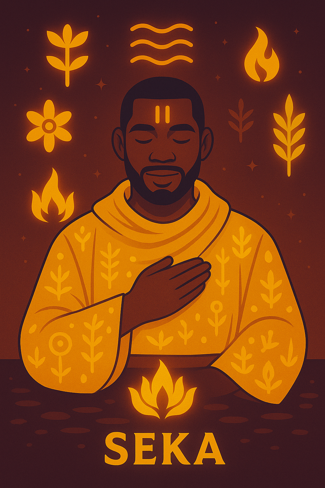
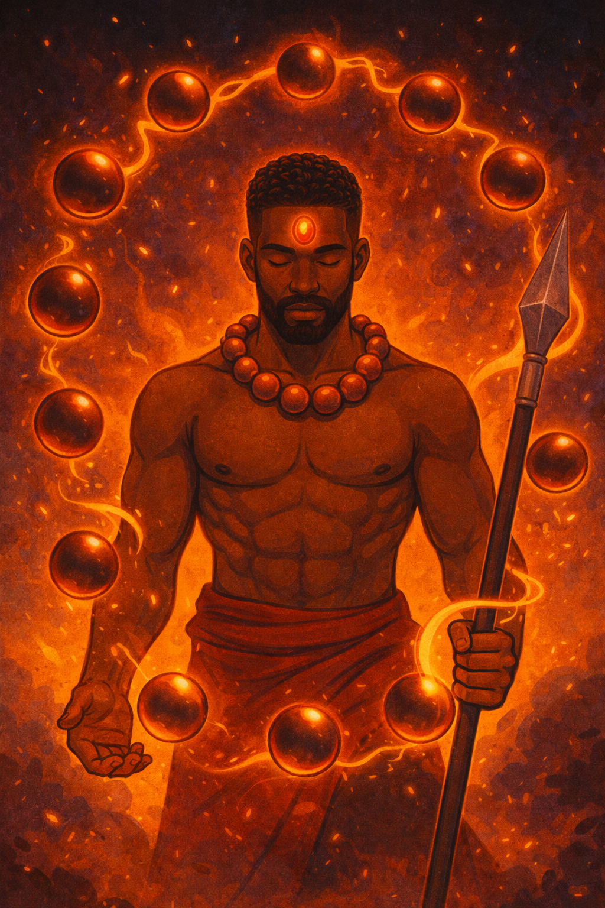

Namizulo
Role: Fire Divine
Symbol: Sacred Flame
Represents divine masculine love, radiance, warmth, and higher fire.
A few central figures from the world of Kisapi.
Role: Fire Divine
Symbol: Sacred Flame
Represents divine masculine love, radiance, warmth, and higher fire.

Role: Grounded Protector
Symbol: Rooted Flame
A disciplined and protective figure tied to endurance, focus, and ritual power.

Role: Radiant Companion
Symbol: Glowing Heart
An expressive and compassionate force whose love helped awaken divine transformation.

Role: Mystic of Presence
Symbol: Twin Forehead Lines
Master of sacred presence, perception, masks, and frequency-based wisdom.

Role: Sacred Companion
Symbol: Love and Fire
A calm, powerful presence connected to devotion, steadiness, and emotional strength.

Role: Mystic Pillar
Symbol: Halo of Purity
A glowing mystic presence associated with higher guidance and spiritual force.